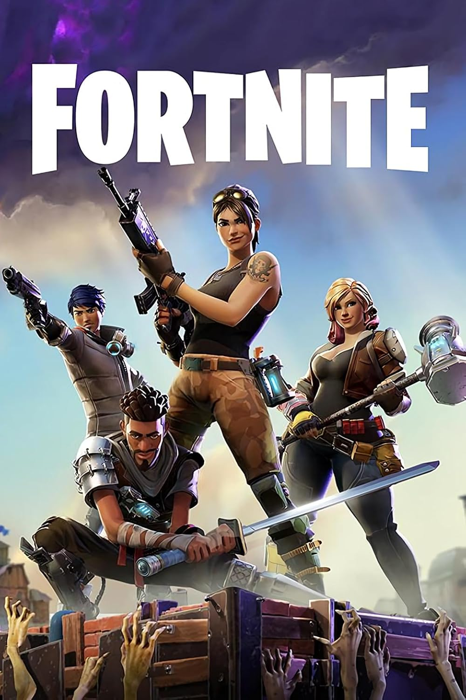
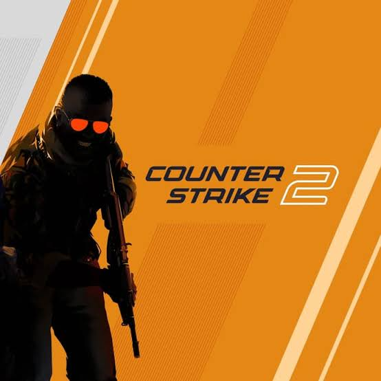

Jogos em destaque

Fortnite
Um Battle Royale onde jogadores competem para ser o último sobrevivente em um mapa que está sempre mudando. Construção, estratégia e combate se misturam em partidas rápidas e imprevisíveis.

Counter-Strike 2
Um FPS tático onde duas equipes se enfrentam em partidas baseadas em estratégia, precisão e trabalho em equipe. Cada rodada pode mudar o resultado da partida, tornando decisões rápidas e comunicação essenciais.

Rocket league
Um jogo que combina futebol e carros em partidas cheias de velocidade e habilidade. Os jogadores precisam trabalhar em equipe para marcar gols e controlar a bola pela arena.